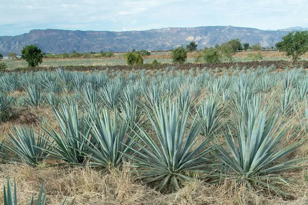

Jalisco: Tequila

Photo: stephan hinni on Unsplash
The state of Jalisco, around the town of Tequila and the Los Altos highlands, makes most of the world's tequila.
How it's made
Protected name: made only in Jalisco and parts of four other states. Blanco is unaged, reposado aged 2–12 months, añejo 1–3 years and extra añejo over 3 years.
Blue Weber agave plants grow for six to eight years before the hearts (piñas) are harvested, cooked in stone ovens or autoclaves, crushed, fermented and usually distilled twice. Some producers still crush with a stone wheel called a tahona.
History
Distilling agave began in Jalisco after the Spanish brought stills in the 1500s. The town of Tequila gave its name to the spirit, and in 1974 tequila became Mexico's first protected appellation of origin.
Ageing and label terms
Blanco is unaged or rested under two months; Reposado is aged 2 to 12 months in oak; Añejo at least one year in casks of up to 600 litres; Extra Añejo at least three years.
Styles
Lowland (Valle) tequilas tend to be earthy and peppery, while Los Altos highland tequilas are often sweeter and fruitier. Look for '100% agave' on the label; 'mixto' tequila can contain up to 49% other sugars.
Rules and protected names
Tequila may be made only in Jalisco and certain municipalities of Guanajuato, Michoacán, Nayarit and Tamaulipas, under the rules of the Consejo Regulador del Tequila. Every bottle carries a NOM number showing the distillery.
How to serve and classic cocktails
Sip good blanco or reposado neat from a small glass; skip the salt and lime with quality tequila. Classic cocktails: Margarita, Paloma and Tequila Sunrise.
With food
Tacos, ceviche, grilled fish, guacamole and spicy dishes; añejos also go with dark chocolate.
Good to know
The agave landscape and old distilleries around Tequila are a UNESCO World Heritage Site (2006). Despite the myth, tequila never contains a worm.
Producers
- Fortaleza
- Tapatío
- Herradura
- Patrón
- Jose Cuervo
Bottles to try
Fortaleza Blanco
Cooked agave, olive brine, citrus and black pepper.
Serve: Neat or in a Margarita
Patrón Silver
Fresh and sweet: cooked agave, citrus and black pepper.
Strength: 40% · Age and cask: Unaged
Made at Hacienda Patrón in Atotonilco el Alto in the Jalisco highlands. It is a blend of agave crushed by a traditional stone wheel (tahona) and by a roller mill.
Serve: In a Margarita or on ice
Herradura Reposado
Cooked agave, butterscotch, vanilla and dried herbs.
Strength: 40% · Age and cask: 11 months, American white oak
Casa Herradura in Amatitán, founded in 1870, rests its reposado for 11 months, far longer than the legal two-month minimum, which gives it extra oak and sweetness.
Serve: Neat or in a Paloma
Tequila Ocho Plata
Cooked agave, citrus, black pepper and fresh herbs.
Strength: 40% · Age and cask: Unaged
Created by tequilero Carlos Camarena and Tomas Estes, each batch comes from a single agave field in the Los Altos highlands, named on the label, so the taste changes from year to year like a vintage wine.
Serve: Neat, or in a Margarita or Paloma
Don Julio Blanco
Crisp agave, citrus, black pepper and a light sweetness.
Strength: 40% (38% in some markets, such as the UK) · Age and cask: Unaged
Founded in 1942 by Don Julio González in the Jalisco highlands. Made from 100% blue Weber agave, it is one of the most widely sold premium tequilas.
Serve: In a Margarita or Paloma, or neat
Fortaleza Reposado
Cooked agave, butter, vanilla, citrus and gentle oak.
Strength: 40% · Age and cask: Reposado, rested in American oak
Made in the town of Tequila by Guillermo Sauza, great-great-grandson of the Sauza founder. Agave is baked in brick ovens, crushed with a stone tahona and distilled in small copper pot stills.
Serve: Neat, or in a top-level Margarita
Siete Leguas Blanco
Cooked agave, black pepper, citrus and a mineral, earthy finish.
Strength: 40% · Age and cask: Unaged
A family-owned distillery in Atotonilco el Alto in the Jalisco Highlands, founded in 1952. It still uses a stone tahona alongside a roller mill, and the name honours Pancho Villa's horse.
Serve: Neat, or in a Margarita or Paloma
El Tesoro Blanco
Sweet cooked agave, lemon, white pepper and fresh herbs.
Strength: 40% · Age and cask: Unaged
Made by the Camarena family at La Alteña distillery near Arandas in the Highlands. The agave is slow-baked in brick ovens and crushed with a traditional tahona.
Serve: Neat, or in a Tommy's Margarita
Don Julio 1942
Caramel, roasted agave, vanilla, chocolate and a long, warm finish.
Strength: 38% (40% in some markets) · Age and cask: Añejo, at least 2.5 years in American white oak
Named after 1942, the year Don Julio González began making tequila at 17. Made from 100% blue Weber agave from the Jalisco highlands, it is one of the best-known luxury añejos.
Serve: Neat in a small glass, slowly, after dinner
Patrón Añejo
Smooth: cooked agave, vanilla, honey, raisin and a light oak spice.
Strength: 40% · Age and cask: At least 12 months (Añejo), oak barrels
Made from Blue Weber agave at Hacienda Patrón in the Jalisco Highlands. Part of the agave is crushed with a traditional stone tahona wheel and part with a roller mill, and the two are blended.
Serve: Neat or on ice, or in a tequila Old Fashioned
Olmeca Altos Plata
Fresh and peppery: cooked agave, lime, green herbs and a sweet citrus finish.
Strength: 38% · Age and cask: Unaged
A 100% agave tequila from the Los Altos highlands of Jalisco. It was created with two London bartenders, Henry Besant and Dre Masso, and part of the agave is crushed with a traditional stone tahona.
Serve: In a Margarita or a Paloma
Tapatío Blanco
Pure and lively: sweet cooked agave, black pepper, mint, citrus and minerals.
Strength: 40% · Age and cask: Unaged
Made at La Alteña, the distillery in the Jalisco highlands near Arandas that Don Felipe Camarena founded in 1937. His family still runs it and also makes Tequila Ocho there.
Serve: Neat, or in a Tommy's Margarita
Patrón Reposado
Cooked agave, vanilla, light oak, honey and citrus.
Strength: 40% · Age and cask: Reposado, rested a few months in oak barrels
Made from 100% Blue Weber agave in the Highlands of Jalisco at Atotonilco el Alto. Part of the agave is crushed with a traditional stone wheel (tahona) and part with a roller mill before the two are blended.
Serve: Neat, in a Margarita, or in a Paloma
Espolòn Blanco
Clean and peppery: cooked agave, citrus, white pepper and a hint of tropical fruit.
Strength: 40% · Age and cask: Unaged
Made from 100% Blue Weber agave at Destilería San Nicolás in the Los Altos highlands of Jalisco. The labels are illustrated in the style of Mexican folk prints and Day of the Dead art.
Serve: In a Margarita, a Paloma or with soda and lime
G4 Blanco
Mineral and fresh: cooked agave, wet stone, citrus, mint and pepper.
Strength: 40% · Age and cask: Unaged
Made by master distiller Felipe Camarena at El Pandillo in the Jalisco highlands. He uses collected rainwater and spring water and a home-built mechanical tahona to crush the agave.
Serve: Neat, or in a simple Margarita
Herradura Plata
Bright and smooth: cooked agave, citrus, vanilla, light oak and pepper.
Strength: 40% · Age and cask: Rested 45 days in American oak
Made at Casa Herradura in Amatitán, which cooks its agave in traditional clay ovens. Herradura says it made the first reposado tequila, in 1974.
Serve: In a Margarita or Paloma, or neat
More agave regions
Explore all spirits in the interactive guide
The Wine Reference newsletter
New wines, stories and career guides, one email a week at most.
Over 18s only. Unsubscribe any time with one click. Your email is stored securely by Kit and never shared.
Support The Wine Reference
This guide is free, with no paywall. If it helped you choose a bottle, you can buy me a glass and keep it growing.
🍷 Buy me a glass